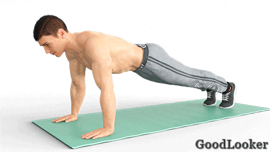

Программа для мужчин в домашних условиях, оптимизированная для проработки грудных мышц, не обходится без нагрузки на трицепс. Дело в том, что трицепсы практически всегда принимают участие в упражнениях на грудную мускулатуру. Так зачем разбивать эти группы на отдельные дни, если можно одним выстрелом убить сразу двух зайцев? Начнем работу с крупной мышечной группы (упражнения на грудь), а закончим маленькой (упражнения на трицепс).
В чем польза: Это базовое упражнение для дома, являющееся одним из самых популярных среди упражнений с весом собственного тела. Оно эффективно развивает объемы и силу груди и трицепсов, являясь при этом минимально травмоопасным упражнением.
Как выполнять: Примите классический упор лежа, расположив ладони немного шире уровня ключиц. Отжимание выполняйте до уровня, пока грудь не окажется в 2-3 см от пола. Локти старайтесь прижимать к бокам и направлять назад.
Сколько выполнять: 10-12 повторений в 4-5 подходов.

Отжимания можно выполнять как от скамейки, так и с возложенными на поверхность ногами. Такие вариации необходимы для активации различных участков грудной мускулатуры. Рекомендуем варьировать виды отжиманий на разных наклонных поверхностях. Например, первый и второй подход отжиманий выполняйте от пола (классический вид), третий и четвертый подход – с ногами на скамье, пятый подход – с руками на скамье.
В чем польза: Представленное упражнение для мужчин в домашних условиях также относится к разряду базовых, поскольку оно крайне эффективно работает в вопросах наращивания объема груди. Жим гантелей практически ничем не отличается от жима штанги, становясь отличной альтернативой как в домашних условиях, так и в зале.
Как выполнять: Жим производится лежа на специальной скамейке. Для начала возложите вес на грудь продольным хватом, после чего с усилием выжимайте его перед собой, не допуская закрытия локтевого замка. Опускайте гантели обратно медленно, без резких движений или бросков.
Сколько выполнять: 10-12 повторений в 4-5 подходов.
В чем польза: Целевой группой при работе являются большие грудные мышцы. Они практически полностью изолируются в процессе работы. Поскольку бицепс и трицепс помогает удерживать гантели в определенном положении, на них тоже приходится определенная часть нагрузки. Ягодицы, живот и мелкие мышцы корпуса удерживают тело неподвижно.
Как выполнять: Разводите вес до уровня, пока не почувствуете приличное натяжение в области груди. Не нужно перебарщивать, опуская снаряды до боли в плечах — это опасно. Разведение выполняется в среднем темпе без резких рывков. Руки всегда держите в слегка согнутом положении.
Сколько выполнять: 10-12 повторений в 4-5 подходов.
В чем польза: Это изолирующее упражнение для развития силы, объемов и рельефа трицепсов. Дополнительное участие в процессе принимают задние пучки дельт, но особой нагрузки они испытывать не должны. Дополнительно прокачиваются мышцы-стабилизаторы.
Как выполнять: Сядьте на скамью с прямой спиной, поддерживая правильную осанку. Возьмите гантель и поднимите ее над головой с выпрямленной рукой. Опускайте вес за затылок, сгибая верхнюю конечность в локте. После — с усилием выпрямляйте руку, акцентируя напряжение в трицепсе. Свободной ладонью придерживайте плечо работающей конечности.
Сколько выполнять: 10-12 повторений в 3-4 подхода на каждую руку.
В чем польза: Это одно из эффективнейших движений для проработки трицепса без использования инвентаря. Дополнительную работу в ходе движения совершают передние пучки дельтоидов, а грудь, в свою очередь, получает небольшую растяжку.
Как выполнять: Обопритесь на скамью или стул ладонями, а корпус отведите вперед, встав на пятки. Опускайтесь аккуратно, пока бедра не окажутся на расстоянии в 5-10 см от пола. Садиться полностью не нужно. После этого с усилием отталкивайтесь обратно. Не сутульте спину и не наклоняйте голову. Чем ближе ноги к скамье, тем проще выполнять упражнение.
Сколько выполнять: 10-12 повторений в 4-5 подходов.

В чем польза: В качестве агонистов выступают локтевые мышцы и трицепсы. В качестве стабилизаторов используются задние пучки дельт, а также разгибатели плеча. Статической нагрузке поддается поясничная группа мышц. Упражнение идеально подходит и новичкам, и профессионалам.
Как выполнять: Упражнение, входящее в программу для мужчин на неделю, делается в наклоне. Соблюдайте небольшой полуприсед. Руки необходимо держать прижатыми к бокам корпуса. Разгибайте верхние конечности до уровня, пока они не образуют прямую линию. Напряжение при этом сосредотачивается в трицепсах.
Сколько выполнять: 10-12 повторений в 4-5 подходов.